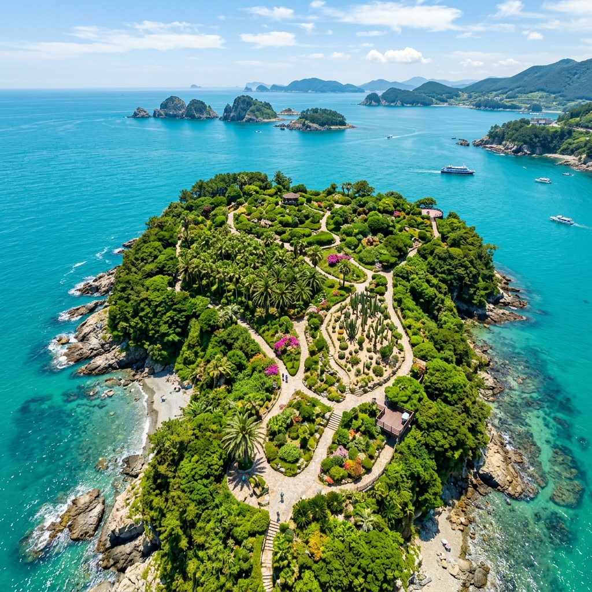
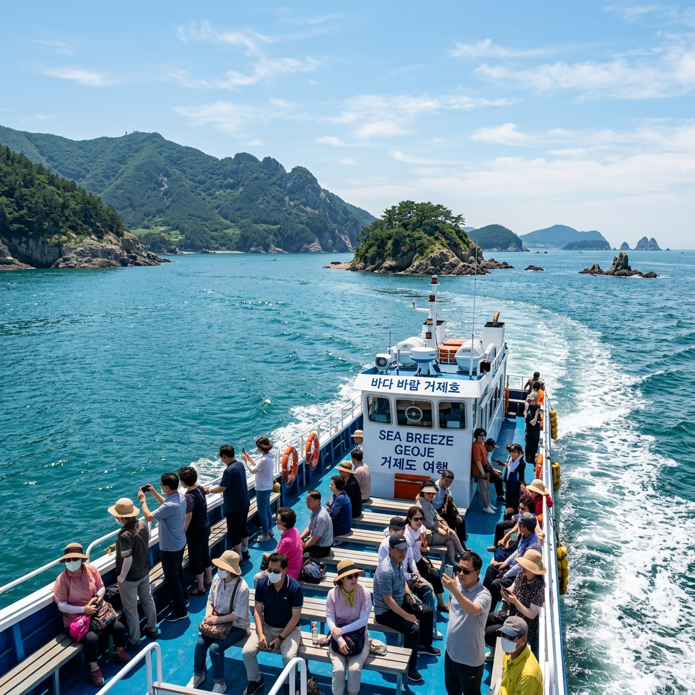
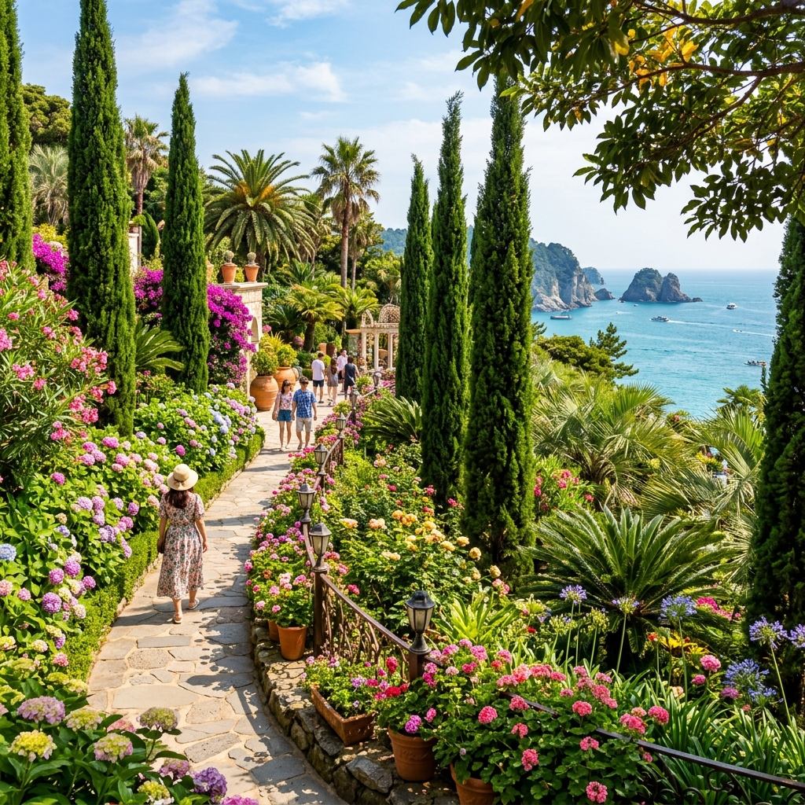

거제 외도 가는 배 시간표와 예약 방법, 섬 안에서 뭘 봐야 하나
작년 여름 가족과 구조라항에서 배를 탔는데, 성수기라 예약 없이 갔다가 두 시간을 기다렸습니다. 매표소 앞에 줄이 길게 늘어섰고, 아이는 지쳐 있었습니다. 막상 섬에 들어가면 그만큼의 수고가 아깝지 않을 만큼 아름다웠지만, 그 경험 이후 외도보타니아 예약 방법을 제대로 정리해 두고 싶었습니다. 성수기에 처음 가는 분들을 위해 제가 직접 겪은 것들을 중심으로 씁니다.
외도보타니아, 어떤 섬인가
경남 거제시 일운면 외도리. 한려해상국립공원에 속하는 이 작은 섬은 면적 약 13만㎡에 아열대 식물 700여 종을 품은 섬 식물원입니다. 개인이 1969년 매입해 30년 넘게 조성한 곳으로, 야자수·사이프러스·선인장 등 국내 다른 곳에서는 좀처럼 보기 힘든 아열대 식물들이 한반도 남단의 바다 위 섬을 빽빽하게 채우고 있습니다.
유람선을 타고 들어가야 하는 접근 방식이 이 섬을 더 특별하게 만듭니다. 배에서 내려 섬 안으로 들어서는 순간, 바다 바람과 함께 열대식물 특유의 향기가 먼저 코에 닿습니다. 7월은 식물들이 가장 왕성하게 자라는 시기이기도 합니다.

한려해상국립공원 품 안의 외도보타니아 — 아열대 식물원이 섬 전체를 덮은 풍경 / AI 제작 이미지
어느 선착장에서 타야 하나
외도행 유람선은 거제도 여러 선착장에서 출발합니다. 대표적인 세 곳을 비교해 보면 다음과 같습니다.
구조라항은 거제 동부에 위치하며 규모가 가장 큽니다. 편의시설이 잘 갖춰져 있고 주차 공간도 넓은 편입니다. 인근에 구조라해수욕장이 있어 외도 방문 전후로 해수욕을 즐기기에도 좋습니다. 외도까지 편도 약 30~40분 소요됩니다.
도장포 선착장은 거제 동남부에서 출발하며, 외도와 해금강을 함께 도는 패키지 코스를 운영하는 업체가 많습니다. 해금강 경치까지 보고 싶다면 도장포 출발 코스를 선택하는 것이 효율적입니다.
학동 선착장은 학동흑진주몽돌해변 인근에 있어, 학동 쪽에 숙박하는 여행자에게 편리합니다. 세 선착장 중 외도까지 소요시간이 조금 더 길 수 있습니다.
선착장별로 운항하는 유람선 업체가 다르고, 시간표와 요금도 업체마다 차이가 있습니다. 예약 전에 각 업체 홈페이지를 직접 확인하거나 전화로 문의하는 것이 가장 정확합니다.
배 시간표 — 언제 타는 게 좋은가
유람선은 보통 오전 8시~9시에 첫 배가 출발해 오후 4시~5시에 막배가 떠납니다. 성수기에는 증편이 이루어져 더 자주 운항하는 경우가 많습니다.
체류 시간은
1시간 30분으로 정해져 있습니다. 유람선이 외도에 닿으면 1시간 30분 뒤 다시 배를 타고 돌아오는 구조입니다. 이 시간을 효율적으로 쓰려면 도착 직후 자신의 귀선 시간을 확인하고 알람을 맞춰 두는 것이 좋습니다.
오전 첫 배를 타는 것을 추천합니다. 섬이 상대적으로 한산하고, 여름 한낮의 강한 햇빛을 피하는 데도 도움이 됩니다. 오후 늦은 배를 타면 섬 안에서 빛이 기울어져 사진 분위기가 달라지기도 합니다.
✍️ 직접 가보니
배가 외도에 가까워질수록 열대식물 향기가 먼저 도착했습니다. 섬에 발을 내딛는 순간부터 분위기가 완전히 달라집니다. 1시간 30분 체류 중 비너스 가든 사진을 찍다가 시간을 많이 썼고, 해안 산책로 끝에서 귀선 시간을 확인하고는 거의 뛰다시피 내려왔습니다. 예상보다 경사가 있는 구간이 있으니 운동화를 꼭 신고, 비너스 가든을 먼저 보고 해안 산책로를 나중에 걷는 동선을 권장합니다.
성수기 예약은 이렇게
7~8월 여름 성수기, 특히 주말과 휴일은 예약 없이 현장에 가면 대기 시간이 길거나 원하는 시간대에 탑승이 어려울 수 있습니다. 성수기 주말은 최소 2주 전 예약을 권장합니다.
예약 방법은 크게 두 가지입니다. 첫 번째는 해당 유람선 업체의 홈페이지나 네이버 예약을 통한 온라인 예약이고, 두 번째는 업체 전화를 통한 예약입니다. 구조라항, 도장포 선착장의 주요 업체들은 온라인 예약 채널을 운영합니다.
예약 시에는 정확한 인원수와 소인 해당 여부(만 13세 미만), 희망 시간대를 미리 정해 두세요. 입장료(성인 13,000원, 소인 7,000원)는 유람선 요금과 별도로 발생한다는 것도 기억해야 합니다.

구조라항을 떠나 외도로 향하는 유람선 — 한려수도를 가르는 여름 바다 / AI 제작 이미지
섬 안에서 뭘 어떻게 봐야 하나
외도보타니아의 체류 시간은 1시간 30분. 동선이 중요합니다. 도착 즉시 귀선 시간을 확인하고 알람을 설정한 뒤 바로 관람에 들어가는 것이 좋습니다.
추천 동선: 선착장 → 비너스 가든 → 선인장 공원 → 조각공원 → 해안 산책로 → 야자수길 → 선착장
비너스 가든은 사이프러스 나무와 아열대 식물로 가득한 지중해풍 정원 구역입니다. 이 섬에서 가장 포토스폿으로 꼽히는 곳입니다. 사진을 많이 찍고 싶다면 이곳에 시간을 많이 배분하세요.
선인장 공원은 다육식물과 대형 선인장 군락을 볼 수 있는 이색 구역으로, 아이들이 특히 좋아합니다. 이어지는
조각공원은 자연 속에 배치된 조형물들을 천천히 감상할 수 있습니다.
해안 산책로는 섬 가장자리를 따라 한려수도를 바라보며 걷는 길입니다. 비취빛 바다와 주변 섬들의 경치가 일품입니다.
야자수길은 귀선 직전 들르기에 좋은 짧은 포토스폿입니다.
외도보타니아의 솔직한 단점
아름다운 곳이지만 솔직히 말씀드리면 아쉬운 점도 있습니다.
첫째,
1시간 30분은 짧습니다. 섬 전체를 천천히 감상하기에 충분하지 않습니다. 사진을 찍거나 느긋하게 앉아 쉬고 싶은 분들에게는 아쉽게 느껴질 수 있습니다.
둘째,
음식 반입이 전면 금지입니다. 외도보타니아는 개인 음식 지참이 허용되지 않습니다. 섬 내에 매점이 있지만 선택지가 제한적이고 가격이 높은 편입니다. 출발 전에 선착장 주변에서 충분히 먹고 가는 것을 권장합니다.
셋째,
반려동물 동반이 불가합니다. 강아지와 함께 여행하는 분들은 이 점을 꼭 사전에 파악해야 합니다.
넷째, 성수기 주말에는
혼잡합니다. 많은 인파가 비너스 가든에 몰리면 원하는 사진을 찍기도 쉽지 않습니다.
방문 전 꼭 챙길 준비물
여름 외도 방문을 위한 준비물을 정리합니다.
· 자외선 차단제 (섬 안 그늘이 적은 구간에서 강한 햇빛 노출)
· 편한 운동화 (경사진 구간 있음, 슬리퍼·샌들 비추천)
· 모자 또는 양산
· 충분한 물 (섬 내 음료 구매 가능하나 비쌈)
· 멀미약 (기상에 따라 뱃길이 흔들릴 수 있음)
· 유람선 예약 확인서 또는 앱 화면

외도보타니아 비너스 가든 — 사이프러스와 아열대 식물이 만들어낸 이국적 정원 / AI 제작 이미지
거제 인근에서 이어갈 여행지
외도보타니아를 다녀왔다면 거제의 다른 명소들과 연결해 보세요.
구조라해수욕장은 구조라항 바로 옆에 있어 유람선에서 내린 뒤 해수욕을 즐기기에 최적입니다. 모래가 곱고 수심이 완만해 아이들도 안전하게 놀 수 있습니다.
학동흑진주몽돌해변은 검은 돌이 가득한 이색 해변으로, 파도 소리가 특별합니다. 거제 남부 숙박지와 세트로 방문하기 좋습니다.
해금강은 도장포 선착장에서 유람선을 타고 볼 수 있는 기암절벽 경치의 명소입니다. 외도와 해금강을 한 코스로 묶는 상품을 이용하면 이동 효율이 높아집니다.
거제는 대구탕·물메기탕 같은 신선한 해산물 요리가 유명합니다. 방문 후 고현 또는 장승포 지역의 해산물 식당을 찾아보세요.
📝 작성자 메모
외도보타니아 운항 정보는 선착장별 유람선 업체마다 다를 수 있습니다. 이 글에 기재된 시간·요금·운항 정보는 일반적인 운영 패턴을 기준으로 작성되었으며, 정확한 시간표와 요금은 반드시 해당 유람선 업체의 공식 채널(홈페이지 또는 전화)에서 방문 전에 재확인하세요. 기상 악화 시 운항이 취소될 수 있습니다. 정보 기준일: 2026-07-08.
#거제외도
#외도보타니아
#거제여행
#한려해상국립공원
#섬여행
#여름여행
#경남여행
#구조라항
#아열대식물원
#여름휴가